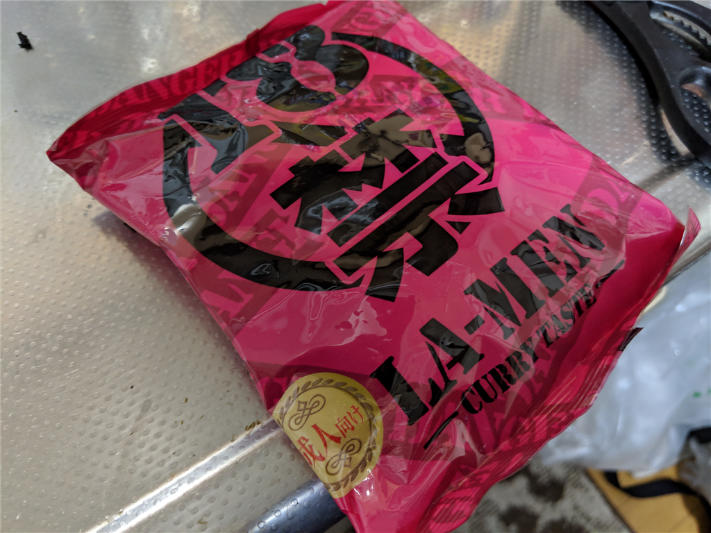
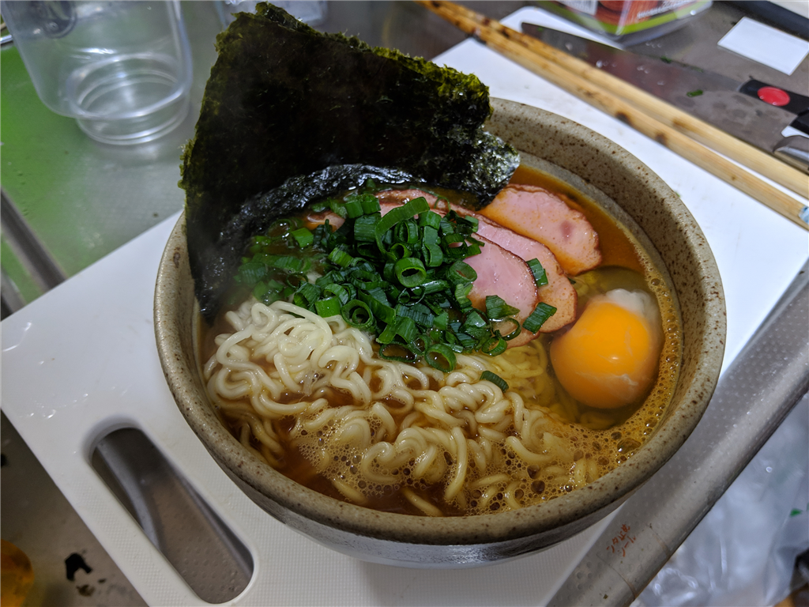

2月25日：18禁ラーメンを食べて死にかけた
執筆日時：

S 氏（仮名）が18禁ラーメンを送り付け、早く食べろと脅すので、しぶしぶ食べてみた。
てかはよ 18 禁ラーメン食べろや
— しばやん (@shibayan) February 25, 2019
ラーメンを制作するにあたり、ネギ、タマゴ、チャーシューを購入。せめておいしく食べられるように、準備を万端に整えた。

麺をゆでる間に、スープの素をどんぶりへ投入する。この段階ですでに目が痛い。あと、袋に残った粉をだすために角を少し叩いたのだが、粉が舞って口や目に入り、咳き込んだ。これを商品企画した奴は、マジで頭おかしいと思う。人間の食うものだとは思えない。
麺がゆがけたので、ザルに落として水を切る。ティファールのケトルからどんぶりにお湯を注ぎ、スープを作る。麺をそれに泳がせ、具を適当にトッピングした。

見た目は美味しそうに見えなくもないが、なんせ匂いがヤバい。鼻がチクチクする。念のためもう一度言うけど、これを商品企画した奴は、マジで頭おかしいと思う。
一口食べてみたが、案の定、辛かった。18禁シリーズは依然、カレーを送ってもらって食べたことがあった。あの時は冷ご飯にかけて食べたので、一応完食できた。しかし、ラーメンのスープは熱い。辛味でおかしくなった舌を、スープの熱が直撃する。口の中から鼻腔に辛み成分の混じった湯気が逆流し、悶絶。口に含んだ麺をどんぶりに吐き出してしまった。
二口目は、チャーシューと交互に食べた。それでもかなりキツい。少しは味がまろやかになるかと思い、卵の黄身をつぶして混ぜてみたり、麺をノリに巻いて食べてみたりしたが、どうにもこうにもいかぬ。三口目になって、ようやく悟った。――これは人類が食べてよいものではない。何回もしつこいようだけど、これを商品企画した奴は、マジで頭おかしいと思う。辛すぎて味がわからんせいか、ぶっちゃけマズい。辛味以外の味がしない。
自分はおかんに「メシは残さずに食え」と育てられたし、日頃、出されたものを残すことはめったにない。でも、これは申し訳ないけど、スープは流しに、麺は燃えるごみの袋に入れた。結局、麺を三口のほかは、トッピングした具材しか食べられなかった。
その日はずっと、脂汗を流しながら、おなかに枕を抱えて過ごした。あまり食べなかったせいか、おなかを下すところまではいかなかったけど、ずっとキリキリして辛かった。ほんとうにこれを商品企画した奴は、マジで頭おかしいと思う。

- 出版社/メーカー: 磯山商事
- メディア: その他
- この商品を含むブログを見る
今後、これが贈られてきたら問答無用で返送（着払い）する。